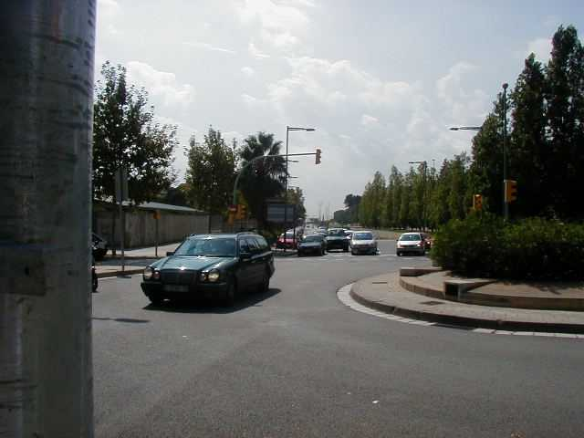
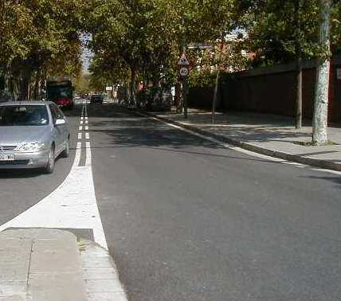
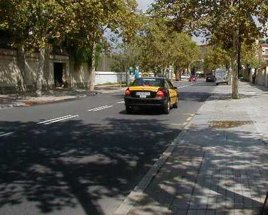
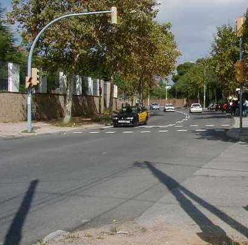
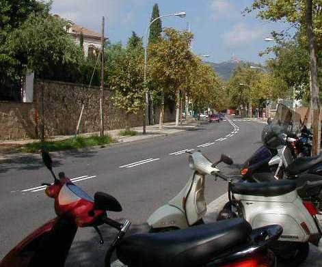
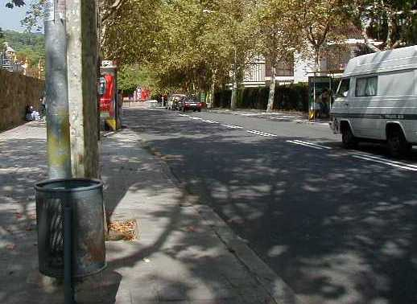
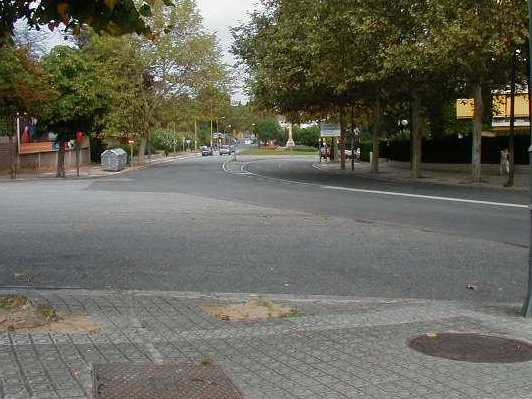
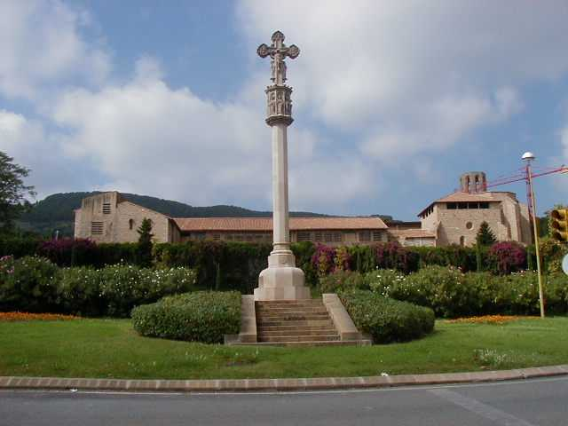
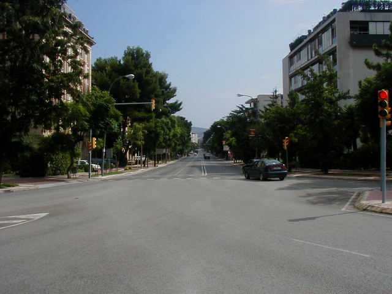

Numbers on the map represent the location where the photographs were taken. Click hyperlinks above to view the photographs.
|| Contents || Carretera de Cornela - Avenida de Victoria | Avenida de Victoria - Avenida Gen. Franco || Home ||
Numbers on the map represent the location where the photographs were taken. Click
hyperlinks above to view the photographs.

01 - Looking back down the Carretera de
Cornela from the right hand kink.

02 - Looking up the Carretera de Cornela
from the right hand kink.

03 - The straight between the right kink and
left hander.

04 - Approaching the left hander by the
University.

05 - Exit of the left hander.

06 - Straight after the University.

07 - Approaching the right hander before the
Avenida de Victoria.

08 - The statue at the top of the Avenida de
Victoria.

09 - Looking down the Avenida de Victoria -
This is actually steep downhill.
Return to racingcircuits.net's Photo Archive Main Index
©2002 Chris Hall. Reproduced here with kind permission.